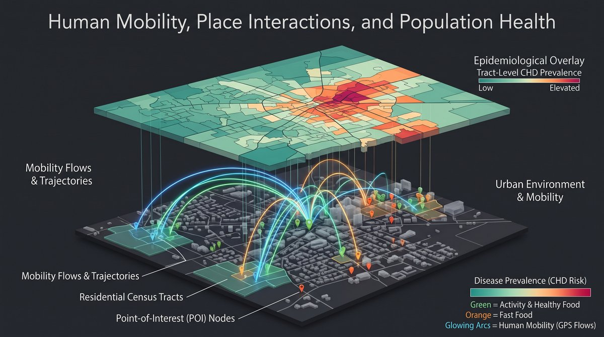
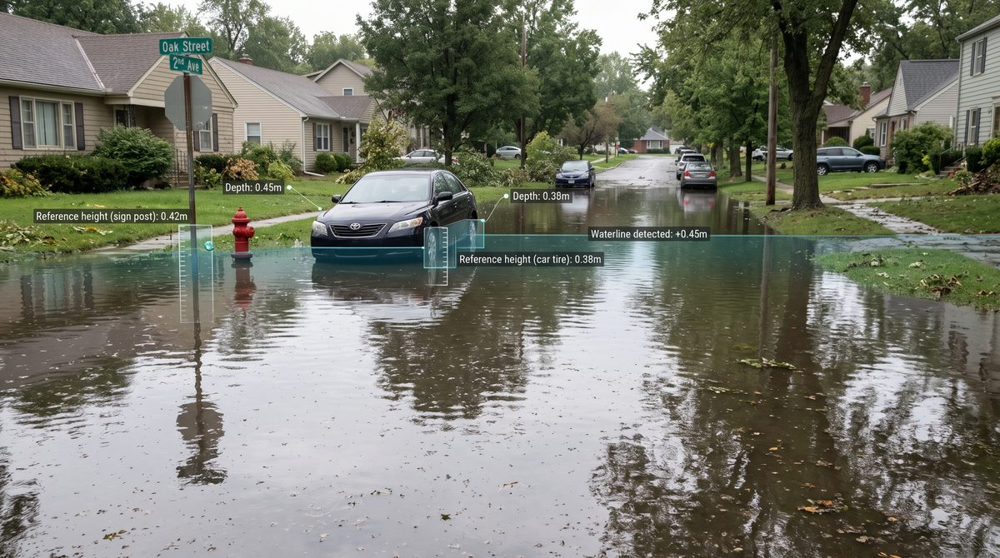

Autonomous GIS & AI agents
Examining how AI agents can support spatial analysis, data retrieval, and scientific inquiry, with human judgment where geographic decisions matter most.

Human mobility & health
Using large-scale smartphone visitation data to measure how people interact with places in everyday life, offering a scalable way to assess neighborhood health and inform equity-focused public health planning.

GeoAI for hazards
Using a large multimodal model to estimate floodwater depth from flood photographs without task-specific training, supporting timely information on where hazards occur and how severe they are.
Open-source tools
- GIS Co-ScientistLead developer · 2026
- SpatialAnalysisAgent (QGIS plugin)
- GeodataRetrieverAgent (QGIS plugin)